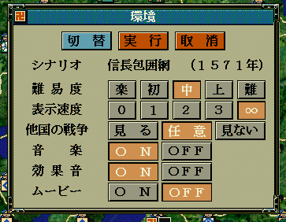
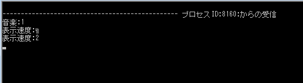
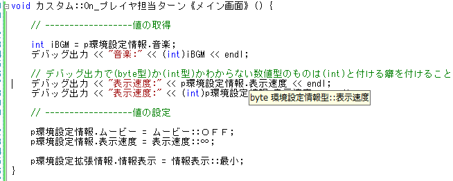

この節では、前節の練習となります。
単数系列の「pほげほげ」はとても使い方が簡単です。 中でも「環境設定」が視覚的にも一番わかりやすいので、ここから入ってみましょう。
単数系の一般的な記述は、
// 値の取得; int iValue = p〇〇情報.フィールド名; // 値の設定; p〇〇情報.フィールド名 = 4;
のような形となります。
それでは、実際に書いて確認してみましょう。
void カスタム::On_プレイヤ担当ターン《メイン画面》() {
// ------------------値の取得
int iBGM = p環境設定情報.音楽;
デバッグ出力 << "音楽:" << iBGM << endl;
// デバッグ出力で(byte型)か(int型)かわからない数値型のものは(int)と付ける癖を付けること。
デバッグ出力 << "表示速度:" << p環境設定情報.表示速度 << endl;
デバッグ出力 << "表示速度:" << (int)p環境設定情報.表示速度 << endl;
// ------------------値の設定
p環境設定情報.ムービー = ムービー::ＯＦＦ;
p環境設定情報.表示速度 = 表示速度::∞;
p環境設定拡張情報.情報表示 = 情報表示::最小;
}
「ムービー::ＯＦＦ」「表示速度::∞」「情報表示::最小」といったものは、
いずれも「環境設定情報列挙.h」に実際にはどういった値なのか、定義されています。
こういった「値を直接指定すると意味がわかりません」といった類のものは
大抵すでに「〇〇情報列挙.h」のようなファイルに定義されていますので、
どんどん利用しましょう。
ソースが格段に理解しやすくなります。
天翔記の機能の設定画面で期待通りになっていることを確認してみましょう。

しかし、一方でModDebuggerに期待通りの表示がされましたか？
いいえ、期待通りにならない箇所が１ヵ所あります。
デバッグ出力 << "表示速度:" << p環境設定情報.表示速度 << endl;
と(int)を付けなかった所はModDebuggerで妙な表示 となりました。

なぜ妙な表示になったのでしょうか。
Visual Studio の該当のソース中の「p環境設定情報.表示速度」のうちの「表示速度」あたりにマウスを移動させてみると、
次のようなバルーンが出ます。

「byte 環境設定情報型::表示速度」と書いてありますね？
この「byte」が原因です。
実はこのbyte型というのは、C/C++の出力用関数にとって
デフォルトでは「数値」ではなく「１文字」として使うもの、なのです。
ですから、デフォルトのままだと、C/C++は
あぁ、これ半角の１文字情報ですよね。任せてください。文字で出力します。
として「文字」を出してしまうのです。
それを、
あ、これ文字じゃないから、数値だから
と人間側が意思を伝えるために(int)を付けます。
これは、C/C++の標準出力のstd::coutとデバッグ出力の仕様を一致させたためなのであり、
ScenarioModではよく引っかかるポイントとなります。注意してください。
では、次のようにするとどうなるでしょうか？
void カスタム::On_プレイヤ担当ターン《メイン画面》() {
// ------------------値の設定
p年情報.季節 = 季節::秋;
}
画面は秋になりましたか？
なりません。
なぜ、ならないのでしょうか。
実は、天翔記的にはちゃんと「秋」になっています。
しかし、画面が再描画されていないのです。
その理由は考えてみれば簡単です。
季節が変わった時、
画面左上の
は、「春」に切り替わったばかりのタイミングで、画面上で春と表示されました。
そして、しばらくして、プレイヤのターンになった時、「季節の情報の値だけ」を「秋」と書き換えました。
しかし、
の画面の描画は、
１季節に１度しか更新されません。
だから「季節の情報の値だけを」書き換えても「画面上の表示」は更新されないのです。
では、内部的に秋になっているのか確認のため、季節を進めてみましょう。
いきなり「冬」になりましたね？
このように内部的には値を書き換えることが出来ても、画面の表示とは食い違うものは多くあります。
そして、そういったものは、ScenarioModで「値」を書き換えるタイミングをよく考慮する必要がある、ということになります。
では、別の例をみてみましょう。
void カスタム::On_プレイヤ担当ターン《メイン画面》() {
// ------------------値の取得
int year = p年情報.年;
デバッグ出力 << (int)year << endl;
}
ModDebugger上にちゃんと年はでましたか？
確かに「何か数値」はでましたが、おそらく期待していた値とは異なるはずです。
年情報.h をよく見ると、 「年」というのは、1454年(天翔記基準年)からの経過数 と書いてあり、我々が想像する「西暦」とは異なる 数値なのです。
そこで、西暦を得るには Get_西暦()を使ってね、といった趣旨のことが記載されています。
void カスタム::On_プレイヤ担当ターン《メイン画面》() {
// ------------------値の取得
int year = Get_西暦();
デバッグ出力 << (int)year << endl;
}
今度はModDebugger上の値が、期待した値となるはずです。
このように「pほげほげ」のそのままのフィールド値が扱いにくいものの場合、
大抵「関数」という形で、 扱いやすいものが提供されています。
以上が単数系列の扱い方となります。
お疲れ様でした。
なお、それぞれの単数系列の具体的な使い方や特徴、
気を付けなければならないポイントなどは、
各々のAPIリファレンスを参照してください。